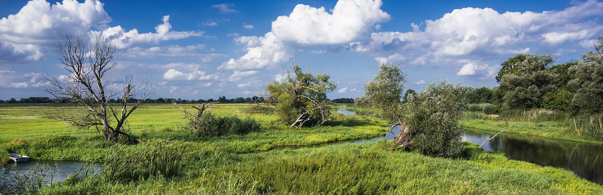
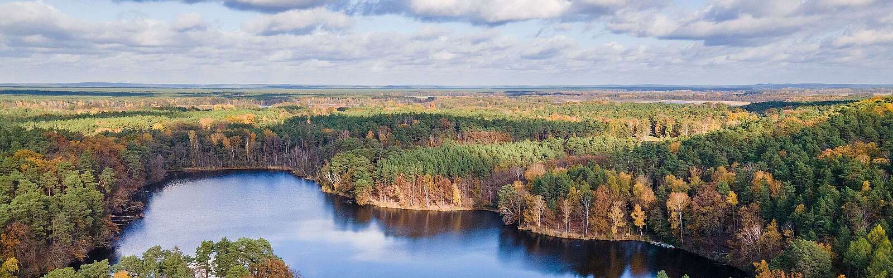
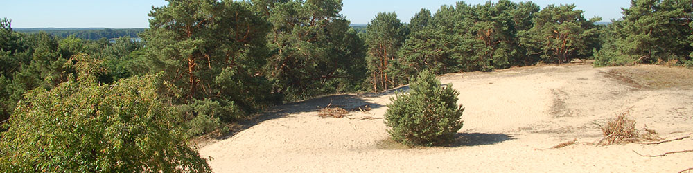
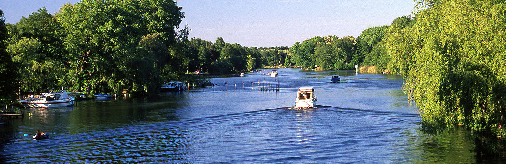
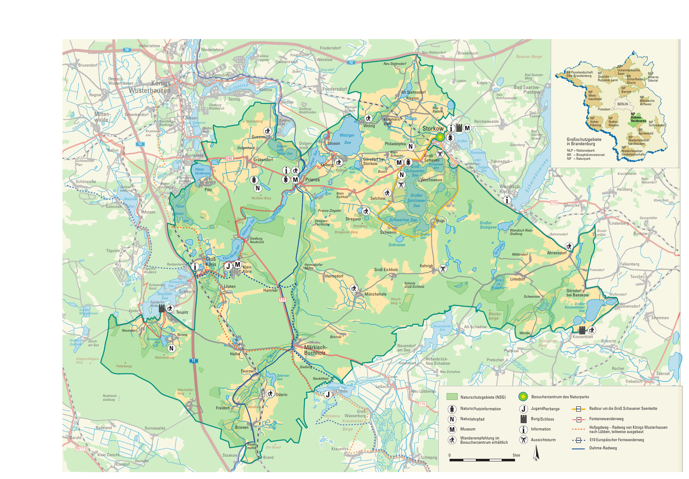

Bild 1 von 4Naturpark Dahme-Spreewald

Dein Überblick über die Region
Willkommen im Naturpark Dahme-Heideseen
Wo liegt dein nächstes Ausflugsziel? Entdecke auf der Karte die Orte, Seen und die Grenzen des Naturparks und verschaffe dir einen Überblick über die Region.
Ob du einen Ausflug planst oder deine Umgebung näher kennenlernen möchtest: Hier beginnt deine Entdeckungstour.
Karte groß öffnen ↗ Ausflugstipp Lust auf Wasser und Natur? Besuchen Sie jetzt Dahme-SeenlandErleben und Lernen
Draußen unterwegs sein, beobachten und Neues über die Natur lernen.
Hier leben
Raum für Geschichten über die Menschen, die Orte und das Leben in der Region.
Unser Auftrag
Hier ist Platz für die Ziele und Aufgaben des Naturparks.
Tipps und Erlebnisse
Alle Themen
Hier ist Platz für Tipps und Erlebnisse aus dem Naturpark. Die Beiträge ergänzen wir als Nächstes.